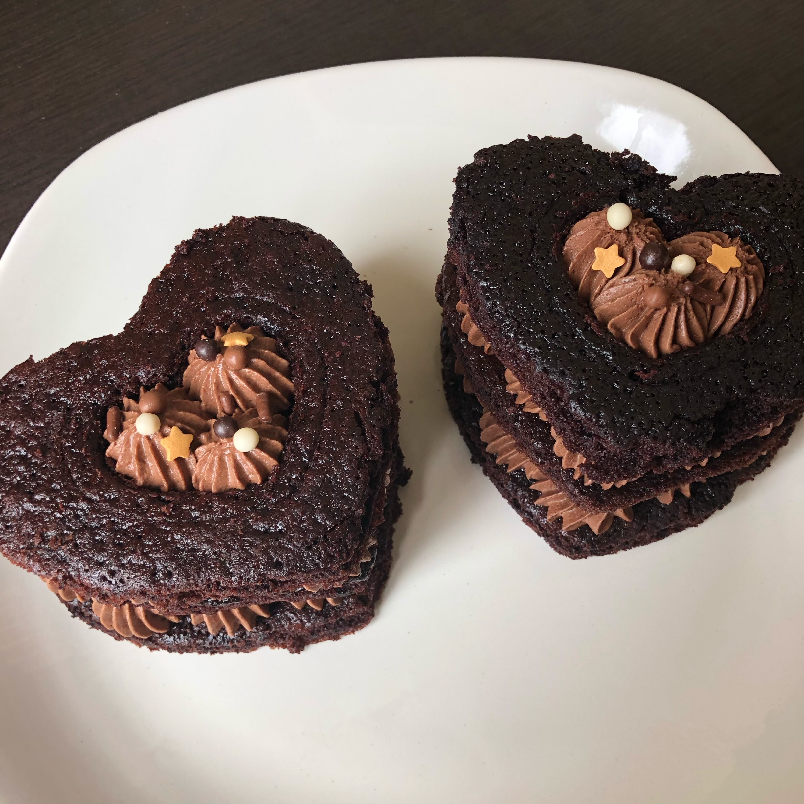
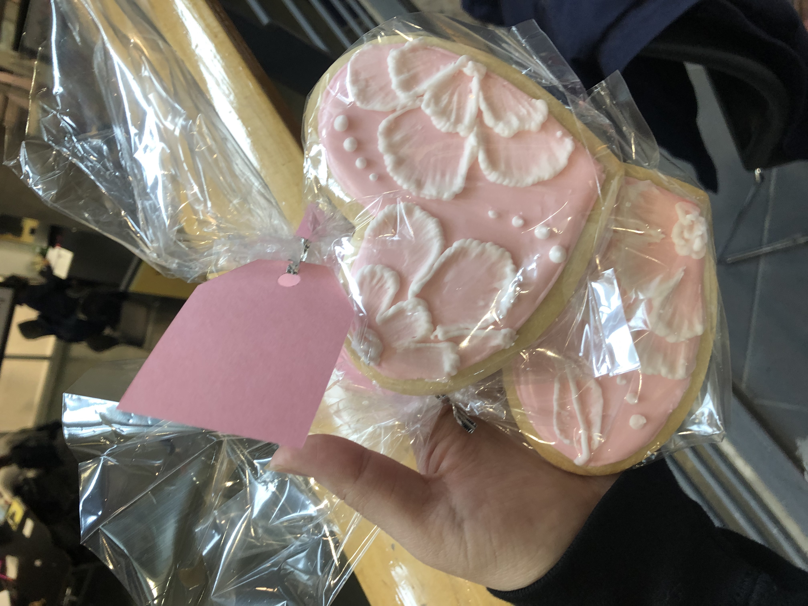
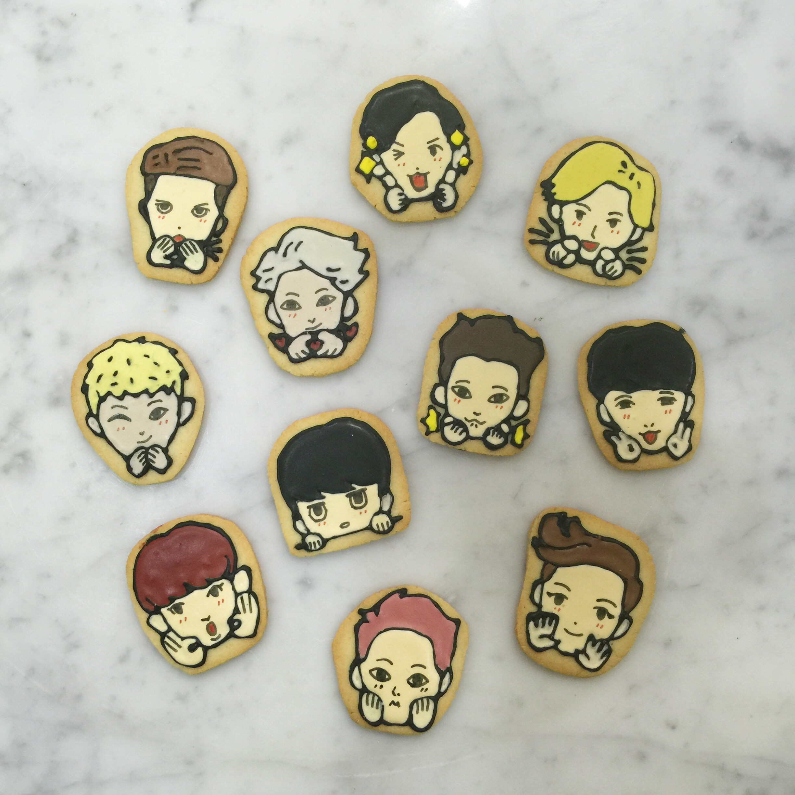

i.
I've been baking since I was a little kid. I think that one of the first things I made were Rice Krispie Squares with my older cousin. I might've been around 6, 7 years old? It's a fuzzy memory, but a memory, nonetheless. Then, sometime after that my parents bought me an EasyBake Oven as a gift. I loved that oven so much, as vague as these memories are, I know I would always make the foods that came with it. That is, until the news came out that the lightbulb was damaging and my parents shelved the oven and eventually tossed it.

ii.
To compensate for the loss of my dear oven, my uncle started buying boxed cake mixes to bake with me. One of my favourite flavours is lemon, and he'd always bring the lemon cake mix home. We'd spend after schools in the kitchen baking cakes, and I think that that's when my passion for baking really developed. Now, although I don't bake as often, I still do it a whole lot. Sometimes, I'll even cater events. I've done baby showers, bridal showers, and engagement parties. I usually make things for smaller events too, like birthday cakes. The difference between when I was younger and now is that now, I focus less on variety, and more on making things look presentable. I've sort of found my niche and would much rather clean up rough edges.

iii.
I tend to forget to take pictures every time I bake, but if you want to see more, I post like, once a year on my baking instagram right HERE.